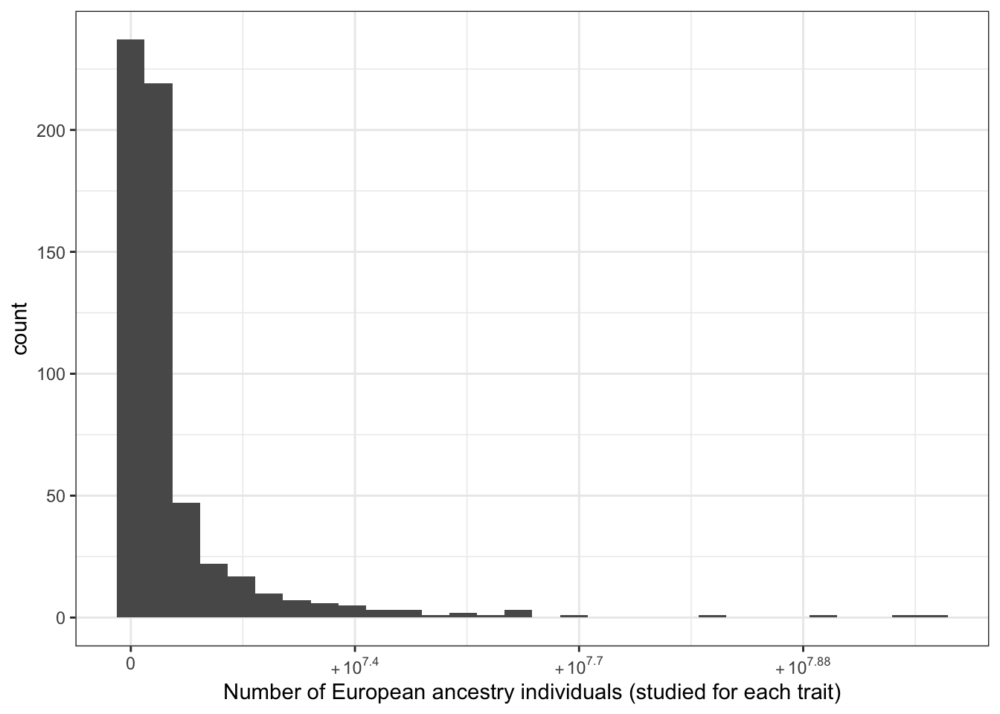
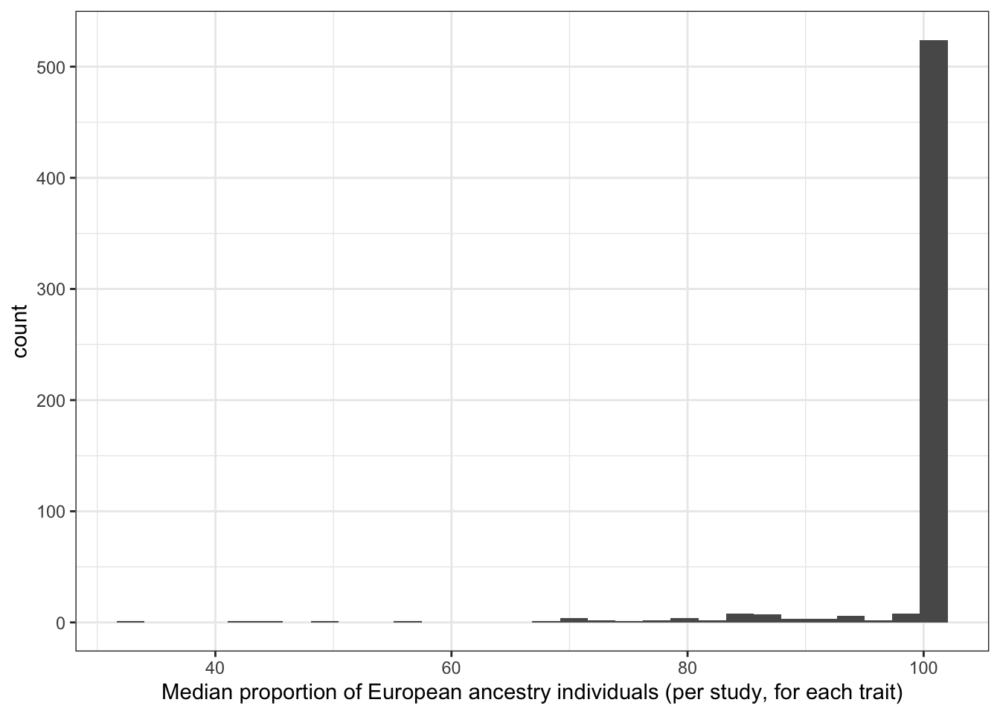

Disease investigated by ancestry
Last updated: 2025-09-11
Checks: 7 0
Knit directory:
genomics_ancest_disease_dispar/
This reproducible R Markdown analysis was created with workflowr (version 1.7.1). The Checks tab describes the reproducibility checks that were applied when the results were created. The Past versions tab lists the development history.
Great! Since the R Markdown file has been committed to the Git repository, you know the exact version of the code that produced these results.
Great job! The global environment was empty. Objects defined in the global environment can affect the analysis in your R Markdown file in unknown ways. For reproduciblity it’s best to always run the code in an empty environment.
The command set.seed(20220216) was run prior to running
the code in the R Markdown file. Setting a seed ensures that any results
that rely on randomness, e.g. subsampling or permutations, are
reproducible.
Great job! Recording the operating system, R version, and package versions is critical for reproducibility.
Nice! There were no cached chunks for this analysis, so you can be confident that you successfully produced the results during this run.
Great job! Using relative paths to the files within your workflowr project makes it easier to run your code on other machines.
Great! You are using Git for version control. Tracking code development and connecting the code version to the results is critical for reproducibility.
The results in this page were generated with repository version 7f2a8f7. See the Past versions tab to see a history of the changes made to the R Markdown and HTML files.
Note that you need to be careful to ensure that all relevant files for
the analysis have been committed to Git prior to generating the results
(you can use wflow_publish or
wflow_git_commit). workflowr only checks the R Markdown
file, but you know if there are other scripts or data files that it
depends on. Below is the status of the Git repository when the results
were generated:
Ignored files:
Ignored: .DS_Store
Ignored: .Rproj.user/
Ignored: data/.DS_Store
Ignored: data/gwas_catalog/
Ignored: output/gwas_cat/
Ignored: output/gwas_study_info_cohort_corrected.csv
Ignored: output/gwas_study_info_trait_corrected.csv
Ignored: output/gwas_study_info_trait_ontology_info.csv
Ignored: output/gwas_study_info_trait_ontology_info_l1.csv
Ignored: output/gwas_study_info_trait_ontology_info_l2.csv
Ignored: output/trait_ontology/
Ignored: renv/
Untracked files:
Untracked: analysis/gbd_data_plots.Rmd
Untracked: data/gbd/
Untracked: data/who/
Unstaged changes:
Modified: analysis/index.Rmd
Deleted: analysis/level_1_disease_group.Rmd
Deleted: analysis/non_ontology_trait_collapse.Rmd
Deleted: analysis/trait_ontology_collapse.Rmd
Note that any generated files, e.g. HTML, png, CSS, etc., are not included in this status report because it is ok for generated content to have uncommitted changes.
These are the previous versions of the repository in which changes were
made to the R Markdown
(analysis/disease_inves_by_ancest.Rmd) and HTML
(docs/disease_inves_by_ancest.html) files. If you’ve
configured a remote Git repository (see ?wflow_git_remote),
click on the hyperlinks in the table below to view the files as they
were in that past version.
| File | Version | Author | Date | Message |
|---|---|---|---|---|
| Rmd | 7f2a8f7 | IJbeasley | 2025-09-11 | Add more global burden vs. dalys plots |
| html | fb089b4 | IJbeasley | 2025-09-11 | Build site. |
| Rmd | 708d5b3 | IJbeasley | 2025-09-11 | Add GBD data to disease gwas ancestry investigation |
| html | 437885b | IJbeasley | 2025-08-25 | Build site. |
| Rmd | 31e868c | IJbeasley | 2025-08-25 | Update proportion euro invest for updated disease categories |
| html | 3d94889 | IJbeasley | 2025-08-23 | Build site. |
| Rmd | 48dd80a | IJbeasley | 2025-08-23 | Update proportion ancestry investigated by disease |
| html | 42e854b | IJbeasley | 2025-08-21 | Build site. |
| Rmd | fa9a4da | IJbeasley | 2025-08-21 | Starting test of relationship between proportion european and total sample size |
| html | f5087d2 | IJBeasley | 2025-07-30 | Build site. |
| Rmd | 72172e3 | IJBeasley | 2025-07-30 | Split page into disease by ancest |
| html | 2fd5755 | Isobel Beasley | 2022-02-16 | Build site. |
| Rmd | 7347b5d | Isobel Beasley | 2022-02-16 | Add initial plotting using gwas cat stats |
1 Set up
library(dplyr)
library(data.table)
library(ggplot2)
source(here::here("code/custom_plotting.R"))1.1 Load data
# gwas_study_info = data.table::fread("data/gwas_catalog/gwas-catalog-v1.0.3-studies-r2022-02-02.tsv",
# sep = "\t",
# quote = "")
# gwas_study_info <- fread(here::here("output/gwas_study_info_trait_corrected.csv"))
gwas_study_info <- fread(here::here("output/gwas_cat/gwas_study_info_trait_group_l2.csv"))
gwas_ancest_info <- fread(here::here("data/gwas_catalog/gwas-catalog-v1.0.3.1-ancestries-r2025-07-21.tsv"),
sep = "\t",
quote = "")1.2 Basic data cleaning
# fixing the column names
gwas_study_info = gwas_study_info |>
dplyr::rename_with(~ gsub(" ", "_", .x))
gwas_ancest_info = gwas_ancest_info |>
dplyr::rename_with(~ gsub(" ", "_", .x))
# making sure arranged by DATE (oldest at the top)
gwas_ancest_info = gwas_ancest_info |>
dplyr::arrange(DATE)
gwas_study_info = gwas_study_info |>
dplyr::arrange(DATE)1.3 NA for number of individuals
# 44 studies / 44 rows
gwas_ancest_info |>
dplyr::filter(is.na(NUMBER_OF_INDIVIDUALS)) |>
nrow()[1] 44# from only 24 gwas papers
gwas_ancest_info |>
dplyr::filter(is.na(NUMBER_OF_INDIVIDUALS)) |>
select(PUBMED_ID) |>
distinct() |>
nrow()[1] 24gwas_ancest_info |>
dplyr::filter(PUBMED_ID == 28679651) |>
select(INITIAL_SAMPLE_DESCRIPTION,
REPLICATION_SAMPLE_DESCRIPTION,
BROAD_ANCESTRAL_CATEGORY) |>
distinct() INITIAL_SAMPLE_DESCRIPTION REPLICATION_SAMPLE_DESCRIPTION
<char> <char>
1: 404 cases, controls <NA>
2: 194 cases, controls <NA>
3: 426 cases, controls <NA>
4: 85 cases, controls <NA>
5: 535 cases, controls <NA>
6: 345 cases, controls <NA>
7: 835 cases, controls <NA>
8: 844 cases, controls <NA>
9: 447 cases, controls <NA>
BROAD_ANCESTRAL_CATEGORY
<char>
1: NR
2: NR
3: NR
4: NR
5: NR
6: NR
7: NR
8: NR
9: NR# 28679651 - problem seems to be that number of controls per disease not specifically listed
# see https://pubmed.ncbi.nlm.nih.gov/28679651/
# although paper they cite as where data comes from (https://www.nature.com/articles/leu2016387#Tab1)
# discloses: 1229 AL amyloidosis patients from Germany, UK and Italy, and 7526 healthy local controls1.3.1 Filter out NA number of individuals
gwas_ancest_info =
gwas_ancest_info |>
dplyr::filter(!is.na(NUMBER_OF_INDIVIDUALS))1.4 Set up - add trait information to ancestry information
gwas_ancest_info =
left_join(
gwas_ancest_info,
gwas_study_info |> select(STUDY_ACCESSION,
COHORT,
MAPPED_TRAIT,
DISEASE_STUDY,
MAPPED_TRAIT_CATEGORY,
BACKGROUND_TRAIT_CATEGORY,
l2_all_disease_terms),
by = "STUDY_ACCESSION"
)
gwas_ancest_info = gwas_ancest_info |> filter(DISEASE_STUDY == T)2 Top traits
2.1 Top traits by number of pubmed ids - including non-disease traits
The traits with the most number of pubmed ids are:
n_studies_trait = gwas_study_info |>
dplyr::select(MAPPED_TRAIT, MAPPED_TRAIT_URI, PUBMED_ID) |>
dplyr::mutate(MAPPED_TRAIT = stringr::str_split(MAPPED_TRAIT, ",\\s*")) |>
tidyr::unnest_longer(MAPPED_TRAIT) |>
dplyr::distinct() |>
dplyr::group_by(MAPPED_TRAIT, MAPPED_TRAIT_URI) |>
dplyr::summarise(n_studies = dplyr::n()) |>
dplyr::arrange(desc(n_studies))`summarise()` has grouped output by 'MAPPED_TRAIT'. You can override using the
`.groups` argument.head(n_studies_trait)# A tibble: 6 × 3
# Groups: MAPPED_TRAIT [6]
MAPPED_TRAIT MAPPED_TRAIT_URI n_studies
<chr> <chr> <int>
1 high density lipoprotein cholesterol measurement http://www.ebi.ac.… 134
2 body mass index http://www.ebi.ac.… 133
3 triglyceride measurement http://www.ebi.ac.… 129
4 low density lipoprotein cholesterol measurement http://www.ebi.ac.… 119
5 type 2 diabetes mellitus http://purl.obolib… 118
6 total cholesterol measurement http://www.ebi.ac.… 1032.2 Top traits by number of pubmed ids - disease traits only
n_studies_trait = gwas_study_info |>
dplyr::filter(DISEASE_STUDY == T) |>
dplyr::select(l2_all_disease_terms, PUBMED_ID) |>
dplyr::mutate(l2_all_disease_terms = stringr::str_split(l2_all_disease_terms, ",\\s*")) |>
tidyr::unnest_longer(l2_all_disease_terms) |>
dplyr::distinct() |>
dplyr::group_by(l2_all_disease_terms) |>
dplyr::summarise(n_studies = dplyr::n()) |>
dplyr::arrange(desc(n_studies))
head(n_studies_trait)# A tibble: 6 × 2
l2_all_disease_terms n_studies
<chr> <int>
1 type 2 diabetes mellitus 192
2 alzheimer's disease and other dementias 162
3 asthma 148
4 breast cancer 147
5 depressive disorders 147
6 schizophrenia 142dim(n_studies_trait)[1] 1811 23 Make ancestry groups
Here we make the column ‘ancestry_group’ in the gwas_study_info datasets, ‘ancestry_group’ defines the broad ancestry group (like in Martin et al. 2019, European, Greater Middle Eastern etc.) that each group of individuals belongs to.
grouped_ancest = vector()
broad_ancest_cat = unique(gwas_ancest_info$BROAD_ANCESTRAL_CATEGORY)
for(study_ancest in broad_ancest_cat){
grouped_ancest[study_ancest] = group_ancestry_fn(study_ancest)
}
grouped_ancest_map = data.frame(ancestry_group = grouped_ancest,
BROAD_ANCESTRAL_CATEGORY = broad_ancest_cat
)
print("See some example mappings between BROAD_ANCESTRAL_CATEGORY and ancestry_group")[1] "See some example mappings between BROAD_ANCESTRAL_CATEGORY and ancestry_group"print(dplyr::slice_sample(grouped_ancest_map, n = 5)) ancestry_group
European European
European, African unspecified Multiple
European, Hispanic or Latin American, African unspecified, Asian unspecified Multiple
East Asian Asian
European, Asian unspecified, African American or Afro-Caribbean, Greater Middle Eastern (Middle Eastern, North African or Persian), Oceanian, Native American, Other, Other admixed ancestry Multiple
BROAD_ANCESTRAL_CATEGORY
European European
European, African unspecified European, African unspecified
European, Hispanic or Latin American, African unspecified, Asian unspecified European, Hispanic or Latin American, African unspecified, Asian unspecified
East Asian East Asian
European, Asian unspecified, African American or Afro-Caribbean, Greater Middle Eastern (Middle Eastern, North African or Persian), Oceanian, Native American, Other, Other admixed ancestry European, Asian unspecified, African American or Afro-Caribbean, Greater Middle Eastern (Middle Eastern, North African or Persian), Oceanian, Native American, Other, Other admixed ancestrygwas_ancest_info = dplyr::left_join(
gwas_ancest_info,
grouped_ancest_map,
by = "BROAD_ANCESTRAL_CATEGORY")
gwas_ancest_info = gwas_ancest_info |>
dplyr::mutate(ancestry_group = factor(ancestry_group, levels = ancestry_levels))3.1 Check: How many individuals in each ancestry group?
Expecting highest to be in European
total_gwas_n =
gwas_ancest_info$NUMBER_OF_INDIVIDUALS |> sum(na.rm = T)
print("Total numbers (in millions) per ancestry group")[1] "Total numbers (in millions) per ancestry group"gwas_ancest_info |>
dplyr::group_by(ancestry_group) |>
dplyr::summarise(n = sum(NUMBER_OF_INDIVIDUALS, na.rm = TRUE)/10^6) |>
dplyr::mutate(prop = n* 10^6/total_gwas_n) |>
dplyr::arrange(desc(n)) # A tibble: 9 × 3
ancestry_group n prop
<fct> <dbl> <dbl>
1 European 5064. 0.865
2 African 316. 0.0539
3 Asian 150. 0.0256
4 Hispanic/Latin American 135. 0.0231
5 Not reported 118. 0.0201
6 Multiple 71.8 0.0123
7 Other 0.755 0.000129
8 Middle Eastern 0.295 0.0000503
9 Oceanic 0.0388 0.000006623.2 Plot number of individuals per ancestry group over time
gwas_ancest_info |>
dplyr::group_by(ancestry_group) |>
dplyr::mutate(ancest_cumsum = cumsum(as.numeric(NUMBER_OF_INDIVIDUALS))) |>
add_final_totals() |>
# select(DATE, ancest_cumsum, ancestry_group, NUMBER_OF_INDIVIDUALS) |>
ggplot(aes(x=DATE,
y=ancest_cumsum/(10^6),
fill = ancestry_group
)
) +
geom_area(position = 'stack') +
scale_x_date(date_labels = '%Y',
date_breaks = "2 years"
) +
theme_classic() +
labs(x = "Year",
y = "Individuals in GWAS catalog (millions)") +
scale_fill_manual(values = ancestry_colors, name='Ancestry group') 
4 Plot number of individuals per ancestry group for a single trait
4.1 Select trait
gwas_ancest_info_plot =
gwas_ancest_info %>%
filter(!is.na(NUMBER_OF_INDIVIDUALS)) |>
filter(MAPPED_TRAIT == 'high density lipoprotein cholesterol measurement')
print("Total numbers (in millions) per ancestry group - for high density lipoprotein cholesterol measurement")[1] "Total numbers (in millions) per ancestry group - for high density lipoprotein cholesterol measurement"gwas_ancest_info_plot %>%
group_by(ancestry_group) %>%
summarise(n = sum(NUMBER_OF_INDIVIDUALS, na.rm = TRUE)/10^6)# A tibble: 4 × 2
ancestry_group n
<fct> <dbl>
1 European 0.00310
2 African 0.00319
3 Multiple 0.00255
4 Not reported 0.001044.2 Plot
gwas_ancest_info_plot =
gwas_ancest_info_plot %>%
group_by(ancestry_group) %>%
mutate(ancest_cumsum = cumsum(as.numeric(NUMBER_OF_INDIVIDUALS)))
gwas_ancest_info_plot = add_final_totals(gwas_ancest_info_plot)
gwas_ancest_info_plot |>
ggplot(aes(x=DATE, y=ancest_cumsum/(10^6), fill = ancestry_group)) +
geom_area(position = 'stack') +
scale_x_date(date_labels = '%Y', date_breaks = "1 years") +
theme_classic() +
labs(x = "Year", y = "Individuals in GWAS catalog (millions)") +
scale_fill_manual(values = ancestry_colors, name='Ancestry group') 
5 Calculate Per Trait: Proportion European, Number of studies, Total number of individuals, Highest sample size in a single study
5.1 Proportion European overall
euro_n = gwas_ancest_info |>
filter(ancestry_group == "European") |>
pull(NUMBER_OF_INDIVIDUALS) |>
sum(na.rm = T)
total_n = gwas_ancest_info |>
pull(NUMBER_OF_INDIVIDUALS) |>
sum(na.rm = T)
100 * euro_n / total_n[1] 86.480425.2 Proportion European per trait
gwas_ancest_trait_info = gwas_ancest_info |>
dplyr::filter(DISEASE_STUDY == T) |>
dplyr::select(l2_all_disease_terms,
PUBMED_ID, ancestry_group, NUMBER_OF_INDIVIDUALS) |>
dplyr::mutate(l2_all_disease_terms = stringr::str_split(l2_all_disease_terms, ",\\s*")) |>
tidyr::unnest_longer(l2_all_disease_terms) |>
dplyr::distinct()
n_studies_trait = n_studies_trait |>
dplyr::filter(n_studies > 2) |>
dplyr::filter(l2_all_disease_terms != "")
total_n_euro_vec = vector()
prop_euro_vec = vector()
med_prop_euro_vec = vector()
first_quartile_prop_euro_vec = vector()
total_n_vec = vector()
med_sample_size_vec = vector()
n_studies_vec = vector()
highest_sample_size_vec = vector()
for(trait in n_studies_trait$l2_all_disease_terms){
# Calculate the number of European ancestry individuals (studied for this trait)
total_euro_n = gwas_ancest_trait_info |>
filter(ancestry_group == "European") |>
filter(l2_all_disease_terms %in% trait) |>
pull(NUMBER_OF_INDIVIDUALS) |>
sum(na.rm = T)
total_n_euro_vec[trait] = total_euro_n
# Calculate the total number of individuals (studied for this trait)
all_study_n = gwas_ancest_trait_info |>
filter(l2_all_disease_terms %in% trait) |>
pull(NUMBER_OF_INDIVIDUALS)
total_n = all_study_n |>
sum(na.rm = T)
total_n_vec[trait] = total_n
# Get the highest sample size in a single study (for this trait)
highest_sample_size = max(all_study_n, na.rm = T)
highest_sample_size_vec[trait] = highest_sample_size
# Get the median sample size in a single study (for this trait)
med_sample_size_vec[trait] = median(all_study_n, na.rm = T)
# Calculate the proportion of European ancestry individuals (across all studies for this trait)
prop_euro_vec[trait] = 100 * total_euro_n / total_n
# Calculate the number of unique studies (pubmed ids) for this trait
n_studies = gwas_ancest_trait_info |>
filter(l2_all_disease_terms %in% trait) |>
pull(PUBMED_ID) |>
unique() |>
length()
n_studies_vec[trait] = n_studies
# Calculate the proportion of European ancestry individuals (per study for this trait)
euro_n_per_study = gwas_ancest_trait_info |>
filter(ancestry_group == "European") |>
filter(l2_all_disease_terms %in% trait) |>
group_by(PUBMED_ID) |>
summarise(n_euro = sum(NUMBER_OF_INDIVIDUALS, na.rm = T))
total_n_per_study = gwas_ancest_trait_info |>
filter(l2_all_disease_terms %in% trait) |>
group_by(PUBMED_ID) |>
summarise(n_total = sum(NUMBER_OF_INDIVIDUALS, na.rm = T))
prop_euro_per_study = inner_join(euro_n_per_study,
total_n_per_study,
by = "PUBMED_ID") |>
mutate(prop_euro = 100 * n_euro / n_total)
med_prop_euro_vec[trait] = median(prop_euro_per_study$prop_euro, na.rm = T)
first_quartile_prop_euro_vec[trait] = quantile(prop_euro_per_study$prop_euro, probs = 0.25, na.rm = T)
}
prop_euro_df = data.frame(trait = n_studies_trait$l2_all_disease_terms,
total_n = total_n_vec,
total_n_euro = total_n_euro_vec,
prop_euro = prop_euro_vec,
median_prop_euro = med_prop_euro_vec,
n_studies = n_studies_vec,
highest_sample_size = highest_sample_size_vec,
median_sample_size = med_sample_size_vec,
first_quartile_prop_euro = first_quartile_prop_euro_vec
)prop_euro_df |> ungroup() |> dplyr::slice_min(prop_euro, n = 10) trait
sickle cell disease and related diseases sickle cell disease and related diseases
leprosy leprosy
hyperuricemia hyperuricemia
rare dyslipidemia rare dyslipidemia
thyrotoxic periodic paralysis thyrotoxic periodic paralysis
amphetamine use disorders amphetamine use disorders
kashin-beck disease kashin-beck disease
moyamoya disease moyamoya disease
schizoaffective disorder schizoaffective disorder
pemphigus vulgaris pemphigus vulgaris
total_n total_n_euro prop_euro
sickle cell disease and related diseases 137512 0 0.0000000
leprosy 97690 0 0.0000000
hyperuricemia 65979 0 0.0000000
rare dyslipidemia 218111 0 0.0000000
thyrotoxic periodic paralysis 14935 0 0.0000000
amphetamine use disorders 10827 0 0.0000000
kashin-beck disease 5653 0 0.0000000
moyamoya disease 7290 0 0.0000000
schizoaffective disorder 146866 446 0.3036782
pemphigus vulgaris 8455 399 4.7191011
median_prop_euro n_studies
sickle cell disease and related diseases NA 15
leprosy NA 7
hyperuricemia NA 4
rare dyslipidemia NA 4
thyrotoxic periodic paralysis NA 4
amphetamine use disorders NA 3
kashin-beck disease NA 3
moyamoya disease NA 3
schizoaffective disorder 81.04907 4
pemphigus vulgaris 24.75186 4
highest_sample_size median_sample_size
sickle cell disease and related diseases 122009 521.0
leprosy 17450 5613.5
hyperuricemia 24535 4774.0
rare dyslipidemia 52449 18250.0
thyrotoxic periodic paralysis 3835 1451.0
amphetamine use disorders 6155 2219.0
kashin-beck disease 1717 863.0
moyamoya disease 3767 512.0
schizoaffective disorder 81080 3488.0
pemphigus vulgaris 2104 735.5
first_quartile_prop_euro
sickle cell disease and related diseases NA
leprosy NA
hyperuricemia NA
rare dyslipidemia NA
thyrotoxic periodic paralysis NA
amphetamine use disorders NA
kashin-beck disease NA
moyamoya disease NA
schizoaffective disorder 71.57360
pemphigus vulgaris 24.75186prop_euro_df |> ungroup() |> dplyr::slice_max(prop_euro, n = 10) trait
autoimmune disease autoimmune disease
polymyalgia rheumatica polymyalgia rheumatica
temporal arteritis temporal arteritis
femoral hernia femoral hernia
abnormal delivery abnormal delivery
cholangitis cholangitis
hip pain hip pain
chronic cystitis chronic cystitis
common cold common cold
exanthem exanthem
gingival bleeding gingival bleeding
granulomatosis with polyangiitis granulomatosis with polyangiitis
infectious mononucleosis infectious mononucleosis
knee pain knee pain
language impairment language impairment
lyme disease lyme disease
mitral valve prolapse mitral valve prolapse
myelodysplastic syndrome myelodysplastic syndrome
neoplasm of mature b-cells neoplasm of mature b-cells
self-injurious behavior self-injurious behavior
small intestine cancer small intestine cancer
stress-related disorder stress-related disorder
abnormal thrombosis abnormal thrombosis
abnormality of head or neck abnormality of head or neck
abnormality of the cervical spine abnormality of the cervical spine
abnormality of the skeletal system abnormality of the skeletal system
acute kidney failure acute kidney failure
antepartum hemorrhage antepartum hemorrhage
anti-neutrophil antibody associated vasculitis anti-neutrophil antibody associated vasculitis
arteritis arteritis
articular cartilage disorder articular cartilage disorder
bartholin gland disease bartholin gland disease
cancer aggressiveness cancer aggressiveness
chickenpox chickenpox
common variable immunodeficiency common variable immunodeficiency
congenital anomaly of the great arteries congenital anomaly of the great arteries
cystic fibrosis associated meconium ileus cystic fibrosis associated meconium ileus
dental pulp disease dental pulp disease
esophagitis esophagitis
ewing sarcoma ewing sarcoma
fecal incontinence fecal incontinence
female reproductive organ cancer female reproductive organ cancer
frontal fibrosing alopecia frontal fibrosing alopecia
functional laterality functional laterality
gallbladder and bilary tract cancer gallbladder and bilary tract cancer
glossitis glossitis
granulomatous dermatitis granulomatous dermatitis
heart aneurysm heart aneurysm
hypermobility syndrome hypermobility syndrome
hyperventilation hyperventilation
iridocyclitis iridocyclitis
juvenile dermatomyositis juvenile dermatomyositis
labyrinthitis labyrinthitis
lower respiratory tract disease lower respiratory tract disease
mastitis mastitis
mastoiditis mastoiditis
multiple system atrophy multiple system atrophy
multisite chronic pain multisite chronic pain
neurofibromatosis neurofibromatosis
nystagmus nystagmus
odontogenic cyst odontogenic cyst
osteochondritis dissecans osteochondritis dissecans
ovarian neoplasm ovarian neoplasm
peritonsillar abscess peritonsillar abscess
postpartum depression postpartum depression
radiation-induced disorder radiation-induced disorder
self-injurious ideation self-injurious ideation
shingles shingles
shoulder impingement syndrome shoulder impingement syndrome
skin cancer in situ skin cancer in situ
toothache toothache
urgency urinary incontinence urgency urinary incontinence
uterine inflammatory disease uterine inflammatory disease
vomiting vomiting
total_n total_n_euro prop_euro
autoimmune disease 1951082 1951082 100
polymyalgia rheumatica 3827751 3827751 100
temporal arteritis 1732337 1732337 100
femoral hernia 2418409 2418409 100
abnormal delivery 2068918 2068918 100
cholangitis 2016250 2016250 100
hip pain 2216824 2216824 100
chronic cystitis 1674324 1674324 100
common cold 896545 896545 100
exanthem 855033 855033 100
gingival bleeding 1094882 1094882 100
granulomatosis with polyangiitis 1312860 1312860 100
infectious mononucleosis 1077967 1077967 100
knee pain 1980067 1980067 100
language impairment 10185 10185 100
lyme disease 1070058 1070058 100
mitral valve prolapse 1279142 1279142 100
myelodysplastic syndrome 476950 476950 100
neoplasm of mature b-cells 38863 38863 100
self-injurious behavior 615417 615417 100
small intestine cancer 2086985 2086985 100
stress-related disorder 790227 790227 100
abnormal thrombosis 855372 855372 100
abnormality of head or neck 1313403 1313403 100
abnormality of the cervical spine 1457960 1457960 100
abnormality of the skeletal system 4223610 4223610 100
acute kidney failure 1675254 1675254 100
antepartum hemorrhage 1144445 1144445 100
anti-neutrophil antibody associated vasculitis 28421 28421 100
arteritis 1307617 1307617 100
articular cartilage disorder 1308890 1308890 100
bartholin gland disease 742865 742865 100
cancer aggressiveness 53002 53002 100
chickenpox 1187938 1187938 100
common variable immunodeficiency 31849 31849 100
congenital anomaly of the great arteries 1314819 1314819 100
cystic fibrosis associated meconium ileus 21422 21422 100
dental pulp disease 1101239 1101239 100
esophagitis 1048652 1048652 100
ewing sarcoma 15632 15632 100
fecal incontinence 859430 859430 100
female reproductive organ cancer 1442506 1442506 100
frontal fibrosing alopecia 12251 12251 100
functional laterality 1278981 1278981 100
gallbladder and bilary tract cancer 1301135 1301135 100
glossitis 1310001 1310001 100
granulomatous dermatitis 1240053 1240053 100
heart aneurysm 1284432 1284432 100
hypermobility syndrome 1285724 1285724 100
hyperventilation 1314418 1314418 100
iridocyclitis 1013674 1013674 100
juvenile dermatomyositis 40362 40362 100
labyrinthitis 1239907 1239907 100
lower respiratory tract disease 1477048 1477048 100
mastitis 1068118 1068118 100
mastoiditis 1311145 1311145 100
multiple system atrophy 21730 21730 100
multisite chronic pain 1550596 1550596 100
neurofibromatosis 821765 821765 100
nystagmus 854184 854184 100
odontogenic cyst 1305471 1305471 100
osteochondritis dissecans 844059 844059 100
ovarian neoplasm 918667 918667 100
peritonsillar abscess 1347550 1347550 100
postpartum depression 451259 451259 100
radiation-induced disorder 408687 408687 100
self-injurious ideation 338014 338014 100
shingles 1252017 1252017 100
shoulder impingement syndrome 1231437 1231437 100
skin cancer in situ 1294876 1294876 100
toothache 1090805 1090805 100
urgency urinary incontinence 22812 22812 100
uterine inflammatory disease 934387 934387 100
vomiting 1602869 1602869 100
median_prop_euro n_studies
autoimmune disease 100 8
polymyalgia rheumatica 100 7
temporal arteritis 100 7
femoral hernia 100 6
abnormal delivery 100 5
cholangitis 100 5
hip pain 100 5
chronic cystitis 100 4
common cold 100 4
exanthem 100 4
gingival bleeding 100 4
granulomatosis with polyangiitis 100 4
infectious mononucleosis 100 4
knee pain 100 4
language impairment 100 4
lyme disease 100 4
mitral valve prolapse 100 4
myelodysplastic syndrome 100 4
neoplasm of mature b-cells 100 4
self-injurious behavior 100 4
small intestine cancer 100 4
stress-related disorder 100 4
abnormal thrombosis 100 3
abnormality of head or neck 100 3
abnormality of the cervical spine 100 3
abnormality of the skeletal system 100 3
acute kidney failure 100 3
antepartum hemorrhage 100 3
anti-neutrophil antibody associated vasculitis 100 3
arteritis 100 3
articular cartilage disorder 100 3
bartholin gland disease 100 3
cancer aggressiveness 100 3
chickenpox 100 3
common variable immunodeficiency 100 3
congenital anomaly of the great arteries 100 3
cystic fibrosis associated meconium ileus 100 3
dental pulp disease 100 3
esophagitis 100 3
ewing sarcoma 100 3
fecal incontinence 100 3
female reproductive organ cancer 100 3
frontal fibrosing alopecia 100 3
functional laterality 100 3
gallbladder and bilary tract cancer 100 3
glossitis 100 3
granulomatous dermatitis 100 3
heart aneurysm 100 3
hypermobility syndrome 100 3
hyperventilation 100 3
iridocyclitis 100 3
juvenile dermatomyositis 100 3
labyrinthitis 100 3
lower respiratory tract disease 100 3
mastitis 100 3
mastoiditis 100 3
multiple system atrophy 100 3
multisite chronic pain 100 3
neurofibromatosis 100 3
nystagmus 100 3
odontogenic cyst 100 3
osteochondritis dissecans 100 3
ovarian neoplasm 100 3
peritonsillar abscess 100 3
postpartum depression 100 3
radiation-induced disorder 100 3
self-injurious ideation 100 3
shingles 100 3
shoulder impingement syndrome 100 3
skin cancer in situ 100 3
toothache 100 3
urgency urinary incontinence 100 3
uterine inflammatory disease 100 3
vomiting 100 3
highest_sample_size
autoimmune disease 469184
polymyalgia rheumatica 456348
temporal arteritis 456348
femoral hernia 456348
abnormal delivery 452942
cholangitis 456348
hip pain 455272
chronic cystitis 456348
common cold 456348
exanthem 448303
gingival bleeding 461031
granulomatosis with polyangiitis 456348
infectious mononucleosis 403384
knee pain 455272
language impairment 4291
lyme disease 617731
mitral valve prolapse 439533
myelodysplastic syndrome 456348
neoplasm of mature b-cells 10486
self-injurious behavior 156880
small intestine cancer 456348
stress-related disorder 456348
abnormal thrombosis 455449
abnormality of head or neck 456348
abnormality of the cervical spine 402528
abnormality of the skeletal system 424024
acute kidney failure 456348
antepartum hemorrhage 401812
anti-neutrophil antibody associated vasculitis 6173
arteritis 456348
articular cartilage disorder 456348
bartholin gland disease 284356
cancer aggressiveness 7973
chickenpox 403381
common variable immunodeficiency 16753
congenital anomaly of the great arteries 456348
cystic fibrosis associated meconium ileus 6770
dental pulp disease 456348
esophagitis 456348
ewing sarcoma 4779
fecal incontinence 456348
female reproductive organ cancer 392158
frontal fibrosing alopecia 6668
functional laterality 455963
gallbladder and bilary tract cancer 456348
glossitis 456348
granulomatous dermatitis 448509
heart aneurysm 456348
hypermobility syndrome 456348
hyperventilation 456348
iridocyclitis 456348
juvenile dermatomyositis 16530
labyrinthitis 448383
lower respiratory tract disease 486484
mastitis 450635
mastoiditis 456348
multiple system atrophy 8016
multisite chronic pain 387649
neurofibromatosis 450894
nystagmus 450009
odontogenic cyst 456348
osteochondritis dissecans 450895
ovarian neoplasm 295291
peritonsillar abscess 456348
postpartum depression 331754
radiation-induced disorder 377968
self-injurious ideation 156716
shingles 456348
shoulder impingement syndrome 624133
skin cancer in situ 456348
toothache 461031
urgency urinary incontinence 8979
uterine inflammatory disease 400035
vomiting 450874
median_sample_size
autoimmune disease 63003.0
polymyalgia rheumatica 382165.5
temporal arteritis 376871.0
femoral hernia 375014.5
abnormal delivery 247540.0
cholangitis 391784.0
hip pain 407746.0
chronic cystitis 418574.0
common cold 219591.0
exanthem 745.0
gingival bleeding 314887.0
granulomatosis with polyangiitis 201371.5
infectious mononucleosis 329052.0
knee pain 372892.0
language impairment 557.5
lyme disease 1060.0
mitral valve prolapse 198354.0
myelodysplastic syndrome 4190.5
neoplasm of mature b-cells 4121.0
self-injurious behavior 139310.0
small intestine cancer 451098.0
stress-related disorder 31332.5
abnormal thrombosis 258962.0
abnormality of head or neck 448094.0
abnormality of the cervical spine 363190.0
abnormality of the skeletal system 394642.0
acute kidney failure 415554.0
antepartum hemorrhage 265344.5
anti-neutrophil antibody associated vasculitis 2036.0
arteritis 450437.0
articular cartilage disorder 449409.0
bartholin gland disease 247540.0
cancer aggressiveness 6540.0
chickenpox 330403.0
common variable immunodeficiency 6936.5
congenital anomaly of the great arteries 450507.0
cystic fibrosis associated meconium ileus 4028.0
dental pulp disease 384486.0
esophagitis 383972.0
ewing sarcoma 2079.0
fecal incontinence 387201.0
female reproductive organ cancer 380236.0
frontal fibrosing alopecia 5161.0
functional laterality 406946.0
gallbladder and bilary tract cancer 451219.0
glossitis 450030.0
granulomatous dermatitis 404332.0
heart aneurysm 450283.0
hypermobility syndrome 450249.0
hyperventilation 449443.0
iridocyclitis 386569.0
juvenile dermatomyositis 13064.0
labyrinthitis 403594.0
lower respiratory tract disease 170757.0
mastitis 407701.0
mastoiditis 449737.0
multiple system atrophy 4777.5
multisite chronic pain 387649.0
neurofibromatosis 185406.0
nystagmus 401460.0
odontogenic cyst 450658.0
osteochondritis dissecans 391100.0
ovarian neoplasm 211652.0
peritonsillar abscess 343565.5
postpartum depression 59039.0
radiation-induced disorder 862.0
self-injurious ideation 80398.0
shingles 330403.0
shoulder impingement syndrome 300026.0
skin cancer in situ 442790.0
toothache 454565.0
urgency urinary incontinence 4069.0
uterine inflammatory disease 286812.0
vomiting 384302.0
first_quartile_prop_euro
autoimmune disease 100
polymyalgia rheumatica 100
temporal arteritis 100
femoral hernia 100
abnormal delivery 100
cholangitis 100
hip pain 100
chronic cystitis 100
common cold 100
exanthem 100
gingival bleeding 100
granulomatosis with polyangiitis 100
infectious mononucleosis 100
knee pain 100
language impairment 100
lyme disease 100
mitral valve prolapse 100
myelodysplastic syndrome 100
neoplasm of mature b-cells 100
self-injurious behavior 100
small intestine cancer 100
stress-related disorder 100
abnormal thrombosis 100
abnormality of head or neck 100
abnormality of the cervical spine 100
abnormality of the skeletal system 100
acute kidney failure 100
antepartum hemorrhage 100
anti-neutrophil antibody associated vasculitis 100
arteritis 100
articular cartilage disorder 100
bartholin gland disease 100
cancer aggressiveness 100
chickenpox 100
common variable immunodeficiency 100
congenital anomaly of the great arteries 100
cystic fibrosis associated meconium ileus 100
dental pulp disease 100
esophagitis 100
ewing sarcoma 100
fecal incontinence 100
female reproductive organ cancer 100
frontal fibrosing alopecia 100
functional laterality 100
gallbladder and bilary tract cancer 100
glossitis 100
granulomatous dermatitis 100
heart aneurysm 100
hypermobility syndrome 100
hyperventilation 100
iridocyclitis 100
juvenile dermatomyositis 100
labyrinthitis 100
lower respiratory tract disease 100
mastitis 100
mastoiditis 100
multiple system atrophy 100
multisite chronic pain 100
neurofibromatosis 100
nystagmus 100
odontogenic cyst 100
osteochondritis dissecans 100
ovarian neoplasm 100
peritonsillar abscess 100
postpartum depression 100
radiation-induced disorder 100
self-injurious ideation 100
shingles 100
shoulder impingement syndrome 100
skin cancer in situ 100
toothache 100
urgency urinary incontinence 100
uterine inflammatory disease 100
vomiting 100prop_euro_df |> ungroup() |> dplyr::slice_max(total_n, n = 5) trait total_n total_n_euro
covid-19 covid-19 139881329 121127570
depressive disorders depressive disorders 67417552 55218174
benign neoplasm benign neoplasm 64019996 56741393
type 2 diabetes mellitus type 2 diabetes mellitus 51963674 41345779
asthma asthma 49845560 43701501
prop_euro median_prop_euro n_studies
covid-19 86.59309 100 59
depressive disorders 81.90474 100 147
benign neoplasm 88.63073 100 27
type 2 diabetes mellitus 79.56670 100 192
asthma 87.67381 100 147
highest_sample_size median_sample_size
covid-19 5519491 13420.0
depressive disorders 2884318 52332.5
benign neoplasm 1730488 211866.0
type 2 diabetes mellitus 2063820 7541.0
asthma 1832398 4532.5
first_quartile_prop_euro
covid-19 78.76279
depressive disorders 100.00000
benign neoplasm 100.00000
type 2 diabetes mellitus 69.79504
asthma 69.995966 Plot variation across disease traits:
6.1 Distribution plots
6.1.1 Number of studies and sample size
6.1.1.1 Averaege number of individuals per study (for each disease)
prop_euro_df = prop_euro_df |>
dplyr::mutate(avg_n_per_study = total_n / n_studies)
print("Average number of individuals per study (for this trait) - in millions")[1] "Average number of individuals per study (for this trait) - in millions"c(prop_euro_df$avg_n_per_study / 10^6) |> summary() Min. 1st Qu. Median Mean 3rd Qu. Max.
0.000439 0.231476 0.436858 0.462484 0.563525 4.830529 prop_euro_df |>
ggplot(aes(x = avg_n_per_study)) +
geom_histogram() +
theme_bw() +
labs(x = "Average number of individuals per study (for this trait)")`stat_bin()` using `bins = 30`. Pick better value with `binwidth`.
6.1.2 Total number of individuals (per disease trait)
print("Total number of individuals (studied for each trait) - in millions")[1] "Total number of individuals (studied for each trait) - in millions"c(prop_euro_df$total_n / 10^6) |> summary() Min. 1st Qu. Median Mean 3rd Qu. Max.
0.00137 1.24304 1.93726 3.89910 3.85425 139.88133 prop_euro_df |>
ggplot(aes(x = total_n)) +
geom_histogram() +
theme_bw() +
scale_x_continuous(labels = scales::label_log()) +
labs(x = "Total number of GWAS participants for each trait")`stat_bin()` using `bins = 30`. Pick better value with `binwidth`.
prop_euro_df |>
mutate(total_n = log10(total_n)) |>
ggplot(aes(x = total_n)) +
geom_histogram() +
theme_bw() +
labs(x = "log10(total number of GWAS participants for each trait)") `stat_bin()` using `bins = 30`. Pick better value with `binwidth`.
6.1.2.1 Number of European individuals (per disease trait)
print("Number of European ancestry individuals (studied for each trait) - in millions")[1] "Number of European ancestry individuals (studied for each trait) - in millions"c(prop_euro_df$total_n_euro / 10^6) |> summary() Min. 1st Qu. Median Mean 3rd Qu. Max.
0.000 1.160 1.694 3.359 3.345 121.128 prop_euro_df |>
ggplot(aes(x = total_n_euro)) +
geom_histogram() +
theme_bw() +
scale_x_continuous(labels = scales::label_log()) +
labs(x = "Number of European ancestry individuals (studied for each trait)")`stat_bin()` using `bins = 30`. Pick better value with `binwidth`.
6.1.2.2 Highest sample size in a single study (per disease trait)
print("Highest sample size in a single study (for this trait) - in millions")[1] "Highest sample size in a single study (for this trait) - in millions"c(prop_euro_df$highest_sample_size / 10^6) |> summary() Min. 1st Qu. Median Mean 3rd Qu. Max.
0.00028 0.44307 0.45635 0.54309 0.48460 5.51949 prop_euro_df |>
ggplot(aes(x = highest_sample_size)) +
geom_histogram() +
theme_bw() +
scale_x_continuous(labels = scales::label_log()) +
labs(x = "Highest sample size in a single study (for this trait)")`stat_bin()` using `bins = 30`. Pick better value with `binwidth`.
| Version | Author | Date |
|---|---|---|
| fb089b4 | IJbeasley | 2025-09-11 |
6.1.3 Proportion european
6.1.3.1 Distribution of proportion european
print("Proportion European ancestry individuals (studied for each trait)")[1] "Proportion European ancestry individuals (studied for each trait)"prop_euro_df$prop_euro |> summary() Min. 1st Qu. Median Mean 3rd Qu. Max.
0.00 82.86 88.50 85.51 93.28 100.00 prop_euro_df |>
ggplot(aes(x = prop_euro)) +
geom_histogram() +
theme_bw() +
labs(x = "Proportion of European ancestry individuals (studied for each trait)")`stat_bin()` using `bins = 30`. Pick better value with `binwidth`.
| Version | Author | Date |
|---|---|---|
| fb089b4 | IJbeasley | 2025-09-11 |
6.1.3.2 Distribution of median proportion european (per study, per disease trait)
print("Median proportion European ancestry individuals (per study, for each trait)")[1] "Median proportion European ancestry individuals (per study, for each trait)"prop_euro_df$median_prop_euro |> summary() Min. 1st Qu. Median Mean 3rd Qu. Max. NA's
24.75 100.00 100.00 97.95 100.00 100.00 8 prop_euro_df |>
ggplot(aes(x = median_prop_euro)) +
geom_histogram() +
theme_bw() +
labs(x = "Median proportion of European ancestry individuals (per study, for each trait)")`stat_bin()` using `bins = 30`. Pick better value with `binwidth`.Warning: Removed 8 rows containing non-finite outside the scale range
(`stat_bin()`).
| Version | Author | Date |
|---|---|---|
| fb089b4 | IJbeasley | 2025-09-11 |
6.1.3.3 Distribution of first quartile proportion european (per study, per disease trait)
print("First quartile proportion European ancestry individuals (per study, for each trait)")[1] "First quartile proportion European ancestry individuals (per study, for each trait)"prop_euro_df$first_quartile_prop_euro |> summary() Min. 1st Qu. Median Mean 3rd Qu. Max. NA's
8.448 85.637 92.829 90.391 100.000 100.000 8 prop_euro_df |>
ggplot(aes(x = first_quartile_prop_euro)) +
geom_histogram() +
theme_bw() +
labs(x = "First quartile proportion of European ancestry individuals (per study, for each trait)")`stat_bin()` using `bins = 30`. Pick better value with `binwidth`.Warning: Removed 8 rows containing non-finite outside the scale range
(`stat_bin()`).
| Version | Author | Date |
|---|---|---|
| fb089b4 | IJbeasley | 2025-09-11 |
6.2 Scatter plots against number and proportion European
third_quartile_prop = quantile(prop_euro_df$prop_euro, probs = 0.75)
first_quartile_prop = quantile(prop_euro_df$prop_euro, probs = 0.25)
fifth_percentile_prop = quantile(prop_euro_df$prop_euro, probs = 0.05)6.2.1 Proportion european - vs. total number of individuals
print("Proportion European vs. total number of individuals - spearman correlation")[1] "Proportion European vs. total number of individuals - spearman correlation"cor(prop_euro_df$prop_euro, prop_euro_df$total_n,
method = "spearman",
use = "pairwise.complete.obs")[1] -0.0795265print("Proportion European vs. total number of individuals - spearman correlation - only traits with > 5 studies")[1] "Proportion European vs. total number of individuals - spearman correlation - only traits with > 5 studies"prop_euro_df |>
filter(n_studies > 5) |>
summarise(cor = cor(prop_euro, total_n,
method = "spearman",
use = "pairwise.complete.obs")) cor
1 0.05443723plot =
prop_euro_df |>
ggplot(aes(x = total_n, y = prop_euro, disease = trait)) +
geom_point() +
theme_bw() +
scale_x_log10(labels = scales::label_log(),
limits = c(min(prop_euro_df$total_n), max(prop_euro_df$total_n) * 1.1)) +
geom_hline(yintercept = third_quartile_prop, linetype="dashed", color = "red") +
geom_hline(yintercept = first_quartile_prop, linetype="dashed", color = "blue") +
geom_hline(yintercept = fifth_percentile_prop, linetype="dashed", color = "purple") +
annotate("text", x = max(prop_euro_df$total_n) - 10^3, y = third_quartile_prop + 1,
label = "3rd quart.", vjust = -0.5, hjust = 1, color = "red") +
annotate("text", x = max(prop_euro_df$total_n) - 10^3, y = first_quartile_prop + 1,
label = "1st quart.", vjust = -0.5, hjust = 1, color = "blue") +
annotate("text", x = max(prop_euro_df$total_n) -10^3, y = fifth_percentile_prop + 1,
label = "5th percent.", vjust = -0.5, hjust = 1, color = "purple") +
labs(x = "Total number of individuals (studied for this trait)",
y = "% European ancestry idividuals (studied for this trait)")
plotly::ggplotly(plot)Warning in is.na(ticktext): is.na() applied to non-(list or vector) of type
'expression'6.2.2 Number of European individuals - vs. total number of individuals
print("Number of European ancestry individuals vs. total number of individuals - spearman correlation")[1] "Number of European ancestry individuals vs. total number of individuals - spearman correlation"cor(prop_euro_df$total_n_euro, prop_euro_df$total_n,
method = "spearman",
use = "pairwise.complete.obs")[1] 0.9878832print("Number of European ancestry individuals vs. total number of individuals - spearman correlation - only traits with > 5 studies")[1] "Number of European ancestry individuals vs. total number of individuals - spearman correlation - only traits with > 5 studies"prop_euro_df |>
filter(n_studies > 5) |>
summarise(cor = cor(total_n_euro, total_n,
method = "spearman",
use = "pairwise.complete.obs")
) cor
1 0.9903923plot =
prop_euro_df |>
ggplot(aes(x = total_n, y = total_n_euro, disease = trait)) +
geom_point() +
theme_bw() +
scale_x_continuous(labels = scales::label_log()) +
scale_y_continuous(labels = scales::label_log()) +
labs(x = "Total number of individuals (studied for this trait)",
y = "Number of European ancestry idividuals (studied for this trait)") +
geom_abline(slope = 1, intercept = 0, linetype="dashed", color = "red")
plotly::ggplotly(plot)Warning in is.na(ticktext): is.na() applied to non-(list or vector) of type
'expression'
Warning in is.na(ticktext): is.na() applied to non-(list or vector) of type
'expression'6.2.3 Proportion european - vs. number of studies
print("Proportion European vs. number of studies - spearman correlation")[1] "Proportion European vs. number of studies - spearman correlation"cor(prop_euro_df$prop_euro, prop_euro_df$n_studies,
method = "spearman",
use = "pairwise.complete.obs")[1] -0.1981124print("Proportion European vs. number of studies - spearman correlation - only traits with > 5 studies")[1] "Proportion European vs. number of studies - spearman correlation - only traits with > 5 studies"prop_euro_df |>
filter(n_studies > 5) |>
summarise(cor = cor(prop_euro, n_studies,
method = "spearman",
use = "pairwise.complete.obs")
) cor
1 -0.152184plot =
prop_euro_df |>
ggplot(aes(x = n_studies, y = prop_euro)) +
geom_point() +
theme_bw() +
scale_x_log10(labels = scales::label_log()) +
labs(x = "Total number of unique PUBMED IDs for this trait",
y = "Proportion of European ancestry idividuals (studied for this trait)")
plotly::ggplotly(plot)Warning in is.na(ticktext): is.na() applied to non-(list or vector) of type
'expression'6.2.4 Number of European individuals vs number of studies
print("Number of European ancestry individuals vs. number of studies - spearman correlation")[1] "Number of European ancestry individuals vs. number of studies - spearman correlation"cor(prop_euro_df$total_n_euro, prop_euro_df$n_studies,
method = "spearman",
use = "pairwise.complete.obs")[1] 0.5771639prop_euro_df |>
filter(n_studies > 5) |>
summarise(cor = cor(total_n_euro, n_studies,
method = "spearman",
use = "pairwise.complete.obs")
) cor
1 0.4768762plot =
prop_euro_df |>
ggplot(aes(x = total_n_euro, y = n_studies, disease = trait)) +
geom_point() +
theme_bw() +
# scale_x_continuous(labels = scales::label_log()) +
labs(x = "Number of European ancestry idividuals (studied for this trait)",
y = "Total number of unique PUBMED IDs for this trait")
plotly::ggplotly(plot)6.2.5 First quartile proportion european vs number of studies
cor(prop_euro_df$first_quartile_prop_euro, prop_euro_df$n_studies,
method = "spearman",
use = "pairwise.complete.obs")[1] 0.1255895prop_euro_df |>
filter(n_studies > 5) |>
summarise(cor = cor(first_quartile_prop_euro, n_studies,
method = "spearman",
use = "pairwise.complete.obs")
) cor
1 -0.1160379plot =
prop_euro_df |>
ggplot(aes(x = n_studies, y = first_quartile_prop_euro, disease = trait)) +
geom_point() +
theme_bw() +
scale_x_log10(labels = scales::label_log()) +
labs(x = "Total number of unique PUBMED IDs for this trait",
y = "First quartile proportion of European ancestry idividuals (studied for this trait)")
plotly::ggplotly(plot)Warning in is.na(ticktext): is.na() applied to non-(list or vector) of type
'expression'6.2.6 First quartile proportion european vs total number of individuals
print("First quartile proportion European vs. total number of individuals - spearman correlation")[1] "First quartile proportion European vs. total number of individuals - spearman correlation"cor(prop_euro_df$first_quartile_prop_euro, prop_euro_df$total_n,
method = "spearman",
use = "pairwise.complete.obs")[1] 0.05615304print("First quartile proportion European vs. total number of individuals - spearman correlation - only traits with > 5 studies")[1] "First quartile proportion European vs. total number of individuals - spearman correlation - only traits with > 5 studies"prop_euro_df |>
filter(n_studies > 5) |>
summarise(cor = cor(first_quartile_prop_euro, total_n,
method = "spearman",
use = "pairwise.complete.obs")
) cor
1 0.06166302plot =
prop_euro_df |>
ggplot(aes(x = total_n, y = first_quartile_prop_euro, disease = trait)) +
geom_point() +
theme_bw() +
scale_x_log10() +
labs(x = "Total number of individuals (studied for this trait)",
y = "First quartile proportion of European ancestry idividuals (studied for this trait)")
plotly::ggplotly(plot)6.2.7 Number of individuals vs number of studies
print("Total number of individuals vs. number of studies - spearman correlation")[1] "Total number of individuals vs. number of studies - spearman correlation"cor(prop_euro_df$total_n, prop_euro_df$n_studies,
method = "spearman",
use = "pairwise.complete.obs")[1] 0.5967405print("Total number of individuals vs. number of studies - spearman correlation - only traits with > 5 studies")[1] "Total number of individuals vs. number of studies - spearman correlation - only traits with > 5 studies"prop_euro_df |>
filter(n_studies > 5) |>
summarise(cor = cor(total_n, n_studies,
method = "spearman",
use = "pairwise.complete.obs")
) cor
1 0.4939128plot =
prop_euro_df |>
ggplot(aes(x = total_n, y = n_studies, diseae = trait)) +
geom_point() +
theme_bw() +
labs(x = "Total number of individuals (studied for this trait)",
y = "Total number of unique PUBMED IDs for this trait")
plotly::ggplotly(plot)6.2.8 Proportion european - vs. average number of individuals per study
print("Proportion European vs. average number of individuals per study - spearman correlation")[1] "Proportion European vs. average number of individuals per study - spearman correlation"cor(prop_euro_df$prop_euro, prop_euro_df$avg_n_per_study,
method = "spearman",
use = "pairwise.complete.obs")[1] 0.05396217print("Proportion European vs. average number of individuals per study - spearman correlation - only traits with > 5 studies")[1] "Proportion European vs. average number of individuals per study - spearman correlation - only traits with > 5 studies"prop_euro_df |>
filter(n_studies > 5) |>
summarise(cor = cor(prop_euro, avg_n_per_study,
method = "spearman",
use = "pairwise.complete.obs")
) cor
1 0.1776857plot =
prop_euro_df |>
ggplot(aes(x = avg_n_per_study, y = prop_euro, disease = trait)) +
geom_point() +
theme_bw() +
labs(x = "Average number of individuals per study (for this trait)",
y = "Proportion of European ancestry idividuals (studied for this trait)")
plotly::ggplotly(plot)6.2.9 Number of studies vs average number of individuals per study
print("Total number of studies vs. average number of individuals per study - spearman correlation")[1] "Total number of studies vs. average number of individuals per study - spearman correlation"cor(prop_euro_df$n_studies, prop_euro_df$avg_n_per_study,
method = "spearman",
use = "pairwise.complete.obs")[1] -0.09528029print("Total number of studies vs. average number of individuals per study - spearman correlation - only traits with > 5 studies")[1] "Total number of studies vs. average number of individuals per study - spearman correlation - only traits with > 5 studies"prop_euro_df |>
filter(n_studies > 5) |>
summarise(cor = cor(n_studies, avg_n_per_study,
method = "spearman",
use = "pairwise.complete.obs")
) cor
1 -0.2970806plot =
prop_euro_df |>
ggplot(aes(x = n_studies, y = avg_n_per_study, disease = trait)) +
geom_point() +
theme_bw() +
labs(x = "Total number of unique PUBMED IDs for this trait",
y = "Average number of individuals per study (for this trait)")
plotly::ggplotly(plot)7 Disease statistics GBD
gbd_data <- data.table::fread(here::here("data/gbd/IHME-GBD_2021_DATA-aa22a7fd-1.csv"))7.1 Total number of individuals vs global DALYs
compare_stats =
left_join(prop_euro_df |> rename(cause = trait),
gbd_data |> mutate(cause = tolower(cause))
)Joining with `by = join_by(cause)`cor(compare_stats$total_n,
compare_stats$val,
method = "spearman",
use = "pairwise.complete.obs"
)[1] 0.5392354plot =
compare_stats |>
ggplot(aes(y = total_n, x = val, trait = cause)) +
geom_point() +
theme_bw() +
scale_y_log10(labels = scales::label_log()) +
scale_x_log10(labels = scales::label_log()) +
labs(y = "Total number of individuals (studied for this trait)",
x = "Global DALYs (2019, GBD)")
plotly::ggplotly(plot)Warning in is.na(ticktext): is.na() applied to non-(list or vector) of type
'expression'
Warning in is.na(ticktext): is.na() applied to non-(list or vector) of type
'expression'7.2 Largest sample size vs global DALYs
cor(compare_stats$highest_sample_size,
compare_stats$val,
method = "spearman",
use = "pairwise.complete.obs"
)[1] 0.2368387plot = compare_stats |>
ggplot(aes(y = highest_sample_size,
x = val,
trait = cause)) +
geom_point() +
scale_y_log10(labels = scales::label_log()) +
scale_x_log10(labels = scales::label_log()) +
theme_bw() +
labs(y = "Largest sample size in a single study (for this trait)",
x = "Global DALYs (2019, GBD)")
plotly::ggplotly(plot)Warning in is.na(ticktext): is.na() applied to non-(list or vector) of type
'expression'
Warning in is.na(ticktext): is.na() applied to non-(list or vector) of type
'expression'7.3 Number of studies vs global DALYs
cor(compare_stats$n_studies,
compare_stats$val,
method = "spearman",
use = "pairwise.complete.obs"
)[1] 0.4780782plot = compare_stats |>
ggplot(aes(y = n_studies,
x = val,
trait = cause)) +
geom_point() +
scale_y_log10(labels = scales::label_log()) +
scale_x_log10(labels = scales::label_log()) +
theme_bw() +
labs(y = "Total number of studies (for this trait)",
x = "Global DALYs (2019, GBD)")
plotly::ggplotly(plot)Warning in is.na(ticktext): is.na() applied to non-(list or vector) of type
'expression'
Warning in is.na(ticktext): is.na() applied to non-(list or vector) of type
'expression'
sessionInfo()R version 4.3.1 (2023-06-16)
Platform: aarch64-apple-darwin20 (64-bit)
Running under: macOS 15.6.1
Matrix products: default
BLAS: /Library/Frameworks/R.framework/Versions/4.3-arm64/Resources/lib/libRblas.0.dylib
LAPACK: /Library/Frameworks/R.framework/Versions/4.3-arm64/Resources/lib/libRlapack.dylib; LAPACK version 3.11.0
locale:
[1] en_US.UTF-8/en_US.UTF-8/en_US.UTF-8/C/en_US.UTF-8/en_US.UTF-8
time zone: America/Los_Angeles
tzcode source: internal
attached base packages:
[1] stats graphics grDevices datasets utils methods base
other attached packages:
[1] ggplot2_3.5.2 data.table_1.17.8 dplyr_1.1.4 workflowr_1.7.1
loaded via a namespace (and not attached):
[1] plotly_4.11.0 sass_0.4.10 utf8_1.2.6 generics_0.1.4
[5] tidyr_1.3.1 renv_1.0.3 stringi_1.8.7 digest_0.6.37
[9] magrittr_2.0.3 evaluate_1.0.4 grid_4.3.1 RColorBrewer_1.1-3
[13] fastmap_1.2.0 rprojroot_2.1.0 jsonlite_2.0.0 processx_3.8.6
[17] whisker_0.4.1 ps_1.9.1 promises_1.3.3 httr_1.4.7
[21] purrr_1.1.0 crosstalk_1.2.1 viridisLite_0.4.2 scales_1.4.0
[25] lazyeval_0.2.2 jquerylib_0.1.4 cli_3.6.5 rlang_1.1.6
[29] withr_3.0.2 cachem_1.1.0 yaml_2.3.10 tools_4.3.1
[33] httpuv_1.6.16 here_1.0.1 vctrs_0.6.5 R6_2.6.1
[37] lifecycle_1.0.4 git2r_0.36.2 stringr_1.5.1 htmlwidgets_1.6.4
[41] fs_1.6.6 pkgconfig_2.0.3 callr_3.7.6 pillar_1.11.0
[45] bslib_0.9.0 later_1.4.2 gtable_0.3.6 glue_1.8.0
[49] Rcpp_1.1.0 xfun_0.52 tibble_3.3.0 tidyselect_1.2.1
[53] rstudioapi_0.17.1 knitr_1.50 farver_2.1.2 htmltools_0.5.8.1
[57] rmarkdown_2.29 labeling_0.4.3 compiler_4.3.1 getPass_0.2-4